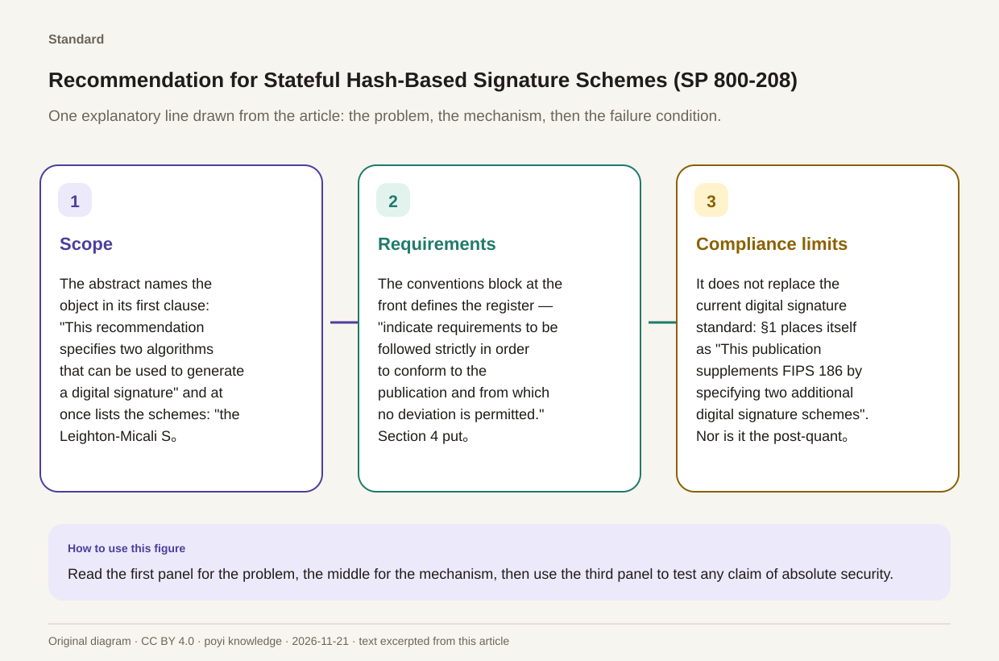
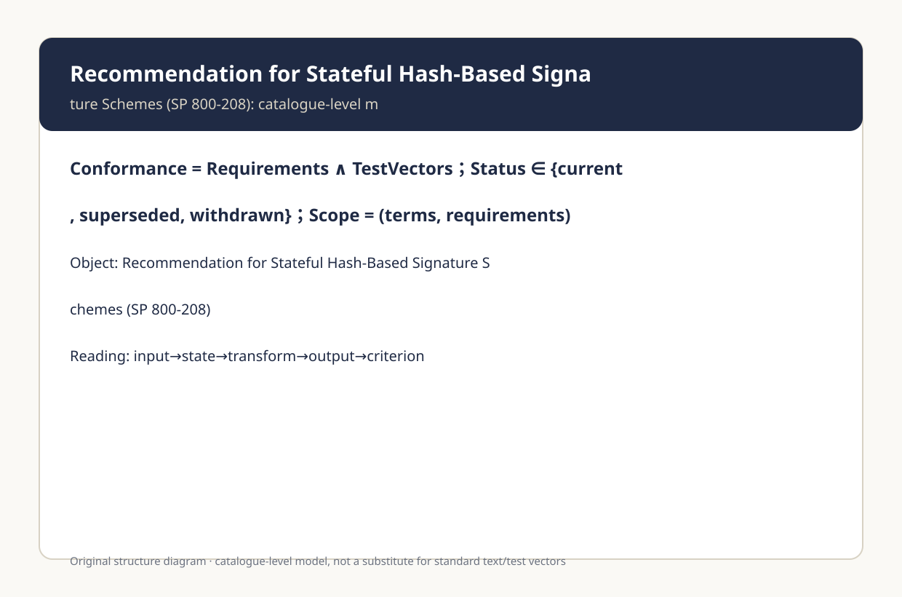

Principles
Standard: Stateful Hash-based Signature Schemes (状态散列基签名方案). The abstract names the object in its first clause: "This recommendation specifies two algorithms that can be used to generate a digital signature" and at once lists the schemes: "the Leighton-Micali Signature (LMS) system and the eXtended Merkle Signature Scheme (XMSS), along with their multi-tree variants, the Hierarchical Signature System (HSS) and multi-tree XMSS (XMSSMT)." The title block reads "Recommendation for Stateful Hash-Based Signature Schemes": both families hold only if the signing state is maintained.The abstract packs both base systems and their multi-tree forms into one sentence, so the word stateful in the title line is load-bearing: the scheme is secure only while the signer knows the index of the next available one-time key.

Why it matters
The risk is stated in §1.2: a private key is a large set of one-time keys and "The signer needs to ensure that no individual OTS key is ever used to sign more than one message." Once one such key signs two messages, "then it would become computationally feasible for that attacker to forge signatures on arbitrary messages". Section 1 gives the trade being made: "The security of the stateful HBS schemes in this publication depends only on the security of the underlying hash functions", followed by "it is believed that the security of hash functions will not be broken by the development of large-scale quantum computers". Section 1.1 concedes the price: "Stateful HBS schemes are not suitable for general use because they require careful state management that is often difficult to assure".Read together the quotations give the trade: security rests only on the preimage and second-preimage difficulty of the hash functions, and the price is that the signer must hold the state, which is exactly what the not-suitable-for-general-use sentence in §1.1 states.
Applications
The conventions block at the front defines the register — "indicate requirements to be followed strictly in order to conform to the publication and from which no deviation is permitted." Section 4 puts shall-level duties on whoever generates key pairs: "each LM-OTS key in the system shall use the same parameter set, and the hash function used for the LMS system shall be the same as the hash function used in the LM-OTS keys." and "When generating LMS or HSS key pairs using SHA-256, the LMS and LM-OTS parameter sets shall be selected from the following two tables". One sentence in §3.1 stays at advice level: "The size of x should generally correspond to the targeted security strength of the scheme."The registers separate cleanly: choosing the parameter sets is shall-level, while sizing the Winternitz secret seed x to the target strength is should-level, and the conventions block makes the first non-deviable and the second merely preferred.

Limits & attacks
It does not replace the current digital signature standard: §1 places itself as "This publication supplements FIPS 186 [4] by specifying two additional digital signature schemes". Nor is it the post-quantum signature standard being awaited — §1.1 says "NIST is in the process of developing standards for post-quantum secure digital signature schemes", the text names no successor and grants no approval beyond its own statements. The range is bounded twice more in §1: only a subset is approved, "This publication approves the use of some but not all of the parameter sets defined in [1] and [2] and also defines some new parameter sets.", and the modules are fixed, "This recommendation requires that key and signature generation be performed in hardware cryptographic modules that do not allow secret keying material to be exported, even in encrypted form."
History
The first title-block line is "NIST Special Publication 800-208"; the author lines carry "David A. Cooper Daniel C. Apon Quynh H. Dang" and "Morris J. Dworkin Carl A. Miller". The date line is October 2020, the citation reads "Natl. Inst. Stand. Technol. Spec. Publ. 800-208, 59 pages (October 2020) CODEN: NSPUE2" and the free-access line is followed by the DOI 10.6028/NIST.SP.800-208. The keyword line sets the subject: "cryptography; digital signatures; hash-based signatures; public-key cryptography." The retained copy carries no acknowledgements page and announces no later revision.These are the front-matter facts of the file itself: the number, the title line, the six authors, the page count, the publication month and the DOI; this text carries no acknowledgements page and announces no successor, so its edition history stops at the October 2020 printing.
Worked example & verification
Formal model and reproduction steps
[S=\min_i S_i,\quad S_i\in{\text{密钥强度},\text{分组安全},\text{实现安全}}]
Stateful Hash-based Signature Schemes: the registered public parameters, key material or randomness, and message are mapped through the stated transformation to an output checked against the registered criterion. The worked example is a structural reproduction, not a new test vector; parameter ranges, standard versions and implementation details remain source-bound.
References
- Wikipedia search entry for 状态散列基签名方案. https://zh.wikipedia.org/w/index.php?search=%E7%8A%B6%E6%80%81%E6%95%A3%E5%88%97%E5%9F%BA%E7%AD%BE%E5%90%8D%E6%96%B9%E6%A1%88
- Handbook of Applied Cryptography (Menezes, van Oorschot, Vanstone). https://www.cacr.math.uwaterloo.ca/hac/